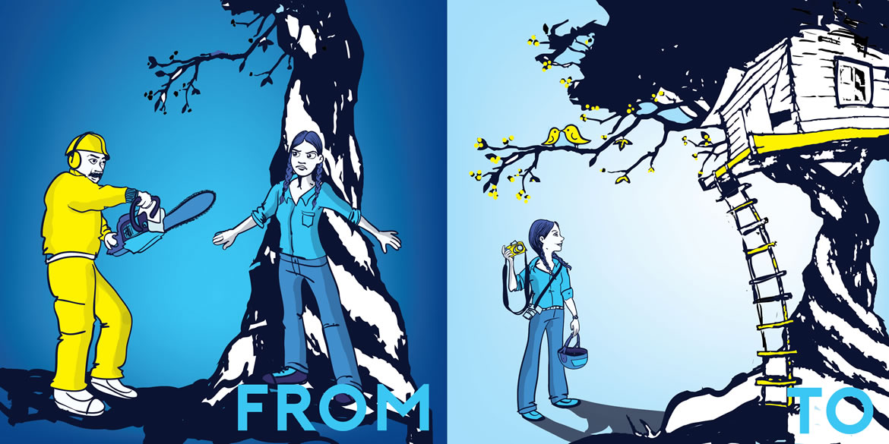

From Dogmatic Defenders to Champions of the Impossible
We Are the Champions of the Impossible
Champions of the Impossible are optimistic, bold and playful. How else can we hope to achieve the impossible? These five guidelines will help you master the tone of voice that a Champion of the Impossible speaks in:
Be Human. Write as you would speak. Be Informal, direct, personal and use short sentences. But be respectful. Sometimes, it's appropriate to be slightly formal, for example when we phrase our demands to companies or political leaders.
Be Bold. What you say should scare you a little bit. If you’re not putting yourself out on a limb, you’re not trying hard enough. If it doesn’t take a little courage to publish what you just wrote, it won’t inspire courage in anyone else.
Get Cheeky. The earnest, fact-based battle between good and evil just isn’t getting people’s attention anymore. We need to be as savvy as the brands we’re facing off with in terms of using humor, pop culture references and unexpected language if we want to get noticed. Yes, our cause is dead serious, but to win, we can’t afford to be dead boring.
Smile.Seriously. As you write or create, try putting a smile on your face. When you look back on what you’ve created, see if that smile holds. If not, perhaps you don’t really believe that what you’re asking people to do will lead to a win or tap into their passions. Rethink what you’re asking.
Be Badass.We’re rebels here. So while we’re out to make people feel optimistic, we’re never fluffy or frivolous. Be bold about naming the bad actors, getting to the heart of problems and demanding change. Champions of the Impossible don’t pull punches.
Aim to Inspire
Here is some example phrasing you can use for inspiration.
Life begins at the edge of your comfort zone.
We are citizens, not consumers.
Do something impossible.
Courage is contagious.
Do what scares you.
Optimistic, bold, playful and fun. The world has enough negativity and fear in it.